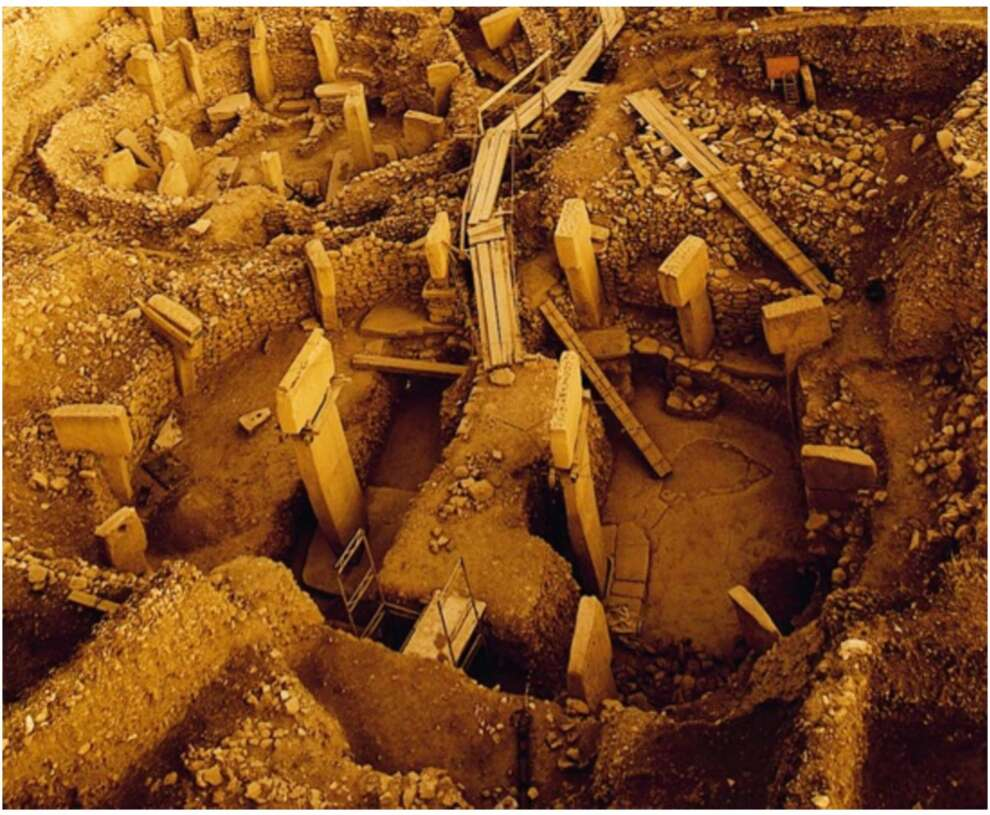

Gobekli Tepe.® This can hardly be a coincidence. It’s likely that the cultural centre of Gobekli Tepe was somehow connected to the initial domestication of wheat by humankind and of humankind by wheat. In order to feed the people who built and used the monumental structures, particularly large quantities of food were required. It may well be that foragers switched from gathering wild wheat to intense wheat cultivation, not to increase their normal food supply, but rather to support the building and running of a temple. In the conventional picture, pioneers first built a village, and when it prospered, they set up a temple in the middle. But Gobekli Tepe suggests that the temple may have been built first, and that a village later grew up around it.
